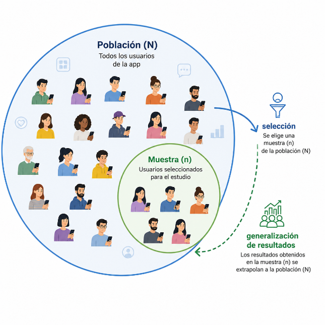
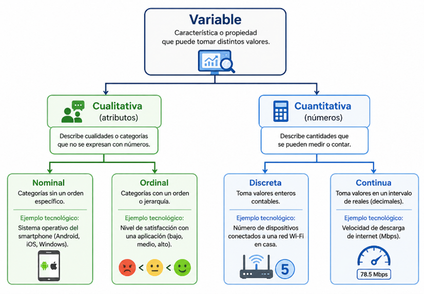
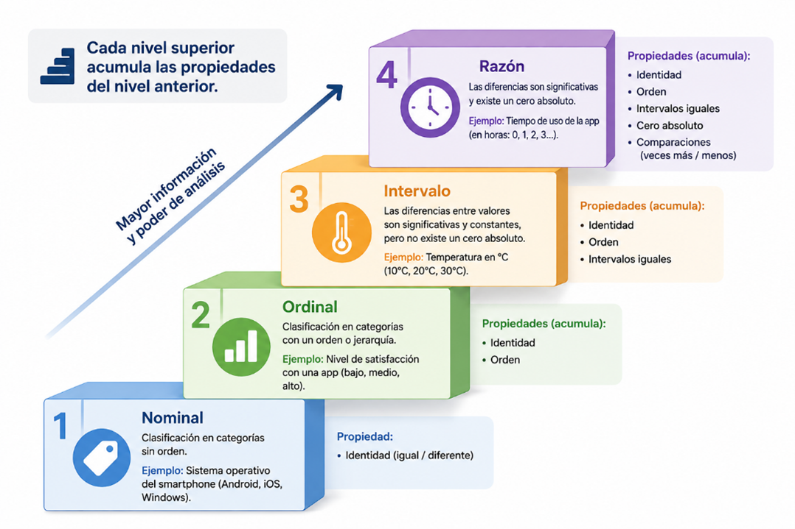

Antes de calcular promedios, construir gráficos o entrenar un modelo de machine learning, es necesario responder tres preguntas fundamentales: ¿qué se está estudiando?, ¿sobre quiénes? y ¿con qué tipo de datos? Esos son exactamente los conceptos de población, muestra y variable, y constituyen el punto de partida de todo análisis estadístico riguroso.
En el desarrollo de software estos conceptos aparecen constantemente: los usuarios de una aplicación son una población; los registros analizados durante una semana son una muestra; el tiempo de respuesta del servidor, el número de errores o el sistema operativo de cada dispositivo son variables de distinta naturaleza. Clasificar correctamente los datos es el primer paso para no llegar a conclusiones erróneas.
Estos conceptos son la base de la analítica de aplicaciones, las pruebas de calidad de software, el monitoreo de servidores y la ciencia de datos.
🎬 Video introductorio
Objetivos de aprendizaje
🧠Identificar los conceptos de población, muestra e individuo en situaciones propias del desarrollo de software.
🔍Diferenciar parámetro y estadístico según se trabaje con la población completa o con una muestra.
📊Clasificar variables cualitativas y cuantitativas, distinguiendo entre discretas y continuas.
📏Relacionar las cuatro escalas de medición (nominal, ordinal, intervalo, razón) con el análisis estadístico válido para cada una.
💻Aplicar la clasificación de variables y escalas a datos reales de sistemas de información y aplicaciones de software.
Desarrollo del Contenido
La población es el conjunto completo de elementos que se desea estudiar; la muestra es un subconjunto representativo de esa población, y el individuo es cada uno de los elementos que la componen. La siguiente figura ilustra esta relación en un estudio de usuarios de una aplicación móvil.

Coloca aquí img/figura1.png'">
Figura 1. Relación entre la población (N) y la muestra (n) en un estudio de usuarios de una aplicación móvil.
Conceptos clave — haz clic para revelar
Población
Clic para revelar
Conjunto completo de todos los elementos que comparten al menos una característica. Tamaño = N. Si se estudia completa, el estudio se llama censo.
Muestra
Clic para revelar
Subconjunto representativo de la población, seleccionado cuando analizar todo es costoso o imposible. Tamaño = n. El estudio se llama muestreo.
Individuo
Clic para revelar
Cada uno de los elementos que compone la población o la muestra, también llamado unidad de análisis: una persona, un registro, un servidor, una petición HTTP.
La población debe estar bien delimitada
Siempre en tiempo, espacio y criterio de pertenencia. Ejemplo correcto: "usuarios activos de la aplicación durante enero de 2026 en Colombia". Sin ese límite, no se sabe a quién se puede generalizar el análisis.
Parámetro
Se calcula sobre la población completa.
Media poblacional: μ (mu)
Desviación estándar: σ (sigma)
Proporción: P
Ejemplo: tiempo promedio de respuesta de todos los servidores de la empresa.
Estadístico
Se calcula sobre una muestra.
Media muestral: x̄ (x barra)
Desviación muestral: s
Proporción muestral: p̂ (p sombrero)
Ejemplo: tiempo promedio de una muestra de 100 peticiones al azar.
¿Por qué importa la distinción?
Un análisis de errores hecho solo sobre usuarios de Android no puede generalizarse a usuarios de iOS.
Trabajar con muestras reduce costos: no hay que revisar millones de registros de un log si una muestra bien tomada da la misma información.
Es la base de la inferencia estadística: estimar parámetros poblacionales a partir de estadísticos muestrales.
Situación
Población
Muestra
Pruebas de rendimiento
Todas las peticiones HTTP del servidor en un mes
5 000 peticiones seleccionadas al azar
Satisfacción de usuarios
Todos los usuarios registrados (N = 80 000)
400 usuarios encuestados
Control de calidad
Todas las líneas de código del proyecto
Módulos revisados en el code review semanal
Análisis de errores
Todos los crash reports del año
Los reportes de la última versión
¿Por qué no siempre se hace censo?
Un servidor de alta demanda puede recibir millones de peticiones por día. Analizar cada una sería imposible en tiempo real. Las muestras permiten detectar anomalías, calcular percentiles de latencia (p95, p99) y tomar decisiones de escalado sin procesar el universo completo de datos.
Una variable es una característica de los individuos que puede tomar diferentes valores. Su clasificación determina qué análisis estadístico es válido, tal como se resume en la siguiente figura.

Coloca aquí img/figura2.png'">
Figura 2. Clasificación de las variables.
Cualitativa Nominal
Categorías sin orden. No se pueden sumar ni restar.
Sistema operativo (Android, iOS, Windows)
Tipo de dispositivo (móvil, tablet, PC)
Lenguaje de programación
Código de estado HTTP (200, 404, 500)
Cualitativa Ordinal
Categorías con orden, pero sin distancias iguales.
Severidad del bug (baja, media, alta, crítica)
Prioridad de tickets (P1 a P4)
Calificación en tienda (1 a 5 estrellas)
Nivel de plan (Básico, Estándar, Premium)
Cuantitativa Discreta
Se cuenta. Solo toma valores enteros.
N.º de bugs reportados por semana
N.º de sesiones del usuario
N.º de descargas de la app
N.º de commits por día
Cuantitativa Continua
Se mide. Puede tomar cualquier valor decimal.
Tiempo de respuesta del servidor (ms)
Temperatura del CPU (°C)
Memoria RAM usada (GB)
Duración de la sesión (minutos)
🎮 Juego: clasifica la variable
Puntaje: 0 / 0
Te mostraré una variable real de desarrollo de software. Sigue las preguntas y elige la respuesta correcta en cada paso. Al final sabrás su clasificación completa.
Variable a clasificar
⚠️ Trampa frecuente: los códigos numéricos
El código de estado HTTP (200, 404, 500) parece cuantitativo porque son números, pero son etiquetas sin valor numérico: 500 no es "2.5 veces más" que 200. Es una variable cualitativa nominal. El truco es preguntar: ¿tiene sentido sumarlos o promediarlos? Si la respuesta es no, la variable es cualitativa.
La escala de medición determina qué operaciones matemáticas y qué análisis estadísticos son válidos sobre una variable. Existen cuatro escalas, ordenadas de menor a mayor nivel de información, como se resume en la siguiente figura.

Coloca aquí img/figura3.png'">
Figura 3. Escalas de medición de las variables y acumulación de sus propiedades.
Escala
¿Qué permite?
Operaciones válidas
Ejemplo tecnológico
Nominal
Clasificar sin orden
Contar, moda
Tipo de dispositivo, lenguaje de programación
Ordinal
Clasificar y ordenar
Contar, moda, mediana
Prioridad de tickets, calificación en estrellas
Intervalo
Ordenar y medir distancias; cero arbitrario
Suma, resta, media
Temperatura del CPU en °C, fecha de lanzamiento
Razón
Todo lo anterior; cero absoluto
Todas, incluyendo proporciones
Tiempo de respuesta, memoria usada, descargas
Intervalo: cero convencional
0 °C no significa "ausencia de temperatura". Por eso no se puede decir que 40 °C es el doble de caliente que 20 °C: las razones no tienen sentido en esta escala.
Razón: cero absoluto
0 ms equivale a sin latencia. Aquí sí tiene sentido decir que un servidor de 100 ms es el doble de rápido que uno de 200 ms.
¿Por qué importa la escala en desarrollo de software?
En machine learning las variables categóricas (nominal u ordinal) necesitan codificación, mientras que las numéricas (intervalo o razón) necesitan normalización.
En dashboards, calcular el promedio de códigos HTTP es un error estadístico porque son nominales; calcular el promedio del tiempo de respuesta es correcto porque es escala de razón.
En gráficas, las variables nominales se representan con barras o pastel, y las de razón con histograma o boxplot. La escala determina el gráfico adecuado.
Dataset real de una aplicación móvil
Considera la siguiente tabla con registros de una app. Analicemos la clasificación de cada variable.
Usuario
Sistema operativo
Nivel de plan
N.º sesiones
Tiempo sesión (min)
U001
Android
Premium
45
12.5
U002
iOS
Básico
12
8.2
U003
Android
Estándar
30
15.8
Nominal
Sistema operativo
Cualitativa nominal: Android, iOS y Windows son categorías sin orden. No se puede decir que Android es "mayor" que iOS. El análisis válido es moda, tablas de frecuencia y gráfico de barras.
Ordinal
Nivel de plan
Cualitativa ordinal: Básico, Estándar y Premium tienen orden, pero no sabemos si la diferencia entre Básico y Estándar es igual que entre Estándar y Premium. Admite además la mediana.
Discreta, razón
N.º de sesiones
Cuantitativa discreta, escala de razón: se cuenta en valores enteros; 0 sesiones equivale a ninguna sesión (cero absoluto), y las proporciones son válidas.
Continua, razón
Tiempo promedio de sesión
Cuantitativa continua, escala de razón: se mide y admite decimales; 0 minutos equivale a sin uso (cero absoluto). Todos los análisis estadísticos son válidos.
Conclusión del ejemplo integrador
Con solo cinco columnas de datos ya aparecen variables de cuatro tipos diferentes. Identificarlas correctamente determina qué gráfico usar, qué estadísticos calcular, cómo preprocesarlas para machine learning y qué conclusiones son válidas. Este es el primer paso de cualquier análisis de datos real.
Actividades prácticas
Actividad 1. Clasifica las variables — arrastra y suelta
Arrastra cada variable a la categoría correcta:
Sistema operativo
Tipo dispositivo
Nivel de plan
Calificación 1-5
N.º bugs/semana
N.º sesiones
Tiempo resp. (ms)
RAM usada (GB)
Temperatura °C
Cualitativa nominal
Cualitativa ordinal
Cuantitativa discreta
Cuantitativa continua
Si el arrastre no funciona en tu dispositivo móvil, intenta también en un computador.
Actividad 2. ¿Qué escala de medición tiene cada variable?
Haz clic en la escala correcta para cada variable y obtén retroalimentación inmediata:
Actividad 3. Verdadero o falso
Escribe V o F en cada casilla:
Si se analizan todos los registros de una base de datos, el estudio se llama muestreo.
El símbolo x̄ representa la media calculada sobre una muestra (estadístico).
La temperatura del CPU en °C es una variable de escala de razón porque el cero absoluto indica ausencia de temperatura.
El número de bugs reportados por semana es una variable cuantitativa discreta.
El código de estado HTTP es una variable cualitativa nominal aunque sus valores sean números.
Calcular el promedio del sistema operativo de los usuarios tiene sentido estadístico.
Actividad 4. Análisis de caso — para tu cuaderno
"Analizaremos los registros de los primeros 1000 usuarios que actualicen la app durante las primeras 24 horas, y con esos resultados concluiremos cómo funciona la versión para todos los usuarios."
1.
Identifica la población objetivo y la muestra propuesta.
2.
¿La muestra es representativa? Menciona al menos dos sesgos de tomar solo los primeros usuarios en actualizar.
3.
Propón una forma más adecuada de seleccionar la muestra.
4.
Clasifica cada métrica (tipo y escala): versión del sistema operativo, número de crashes, duración de sesión en minutos y valoración de 1 a 5 estrellas.
Evaluación
Comprueba lo que has aprendido. Selecciona la respuesta correcta para cada pregunta.
Recursos para profundizar
Para ampliar tu conocimiento sobre población, muestra y variables:
Ejercicios interactivos — Tipos de variables estadísticas (Superprof)
Ejercicios interactivos para practicar la clasificación de variables
Anderson, D. R., Sweeney, D. J., Williams, T. A., Camm, J. D., y Cochran, J. J. (2020). Estadística para administración y economía (13.ª ed.). Cengage Learning.
Cadena Lozano, J. B. (2024). Estadística descriptiva y probabilidad para los negocios. Editorial CESA.
Levin, R. I., y Rubin, D. S. (2018). Estadística para administración y economía (8.ª ed.). Pearson.
Lind, D. A., Marchal, W. G., y Wathen, S. A. (2019). Estadística aplicada a los negocios y la economía. McGraw-Hill.
Spiegel, M. R., Schiller, J., y Srinivasan, R. A. (2018). Estadística (5.ª ed.). McGraw-Hill Education.
 Escanea el QR
Escanea el QR
 Escanea el QR
Escanea el QR
 Escanea el QR
Escanea el QR